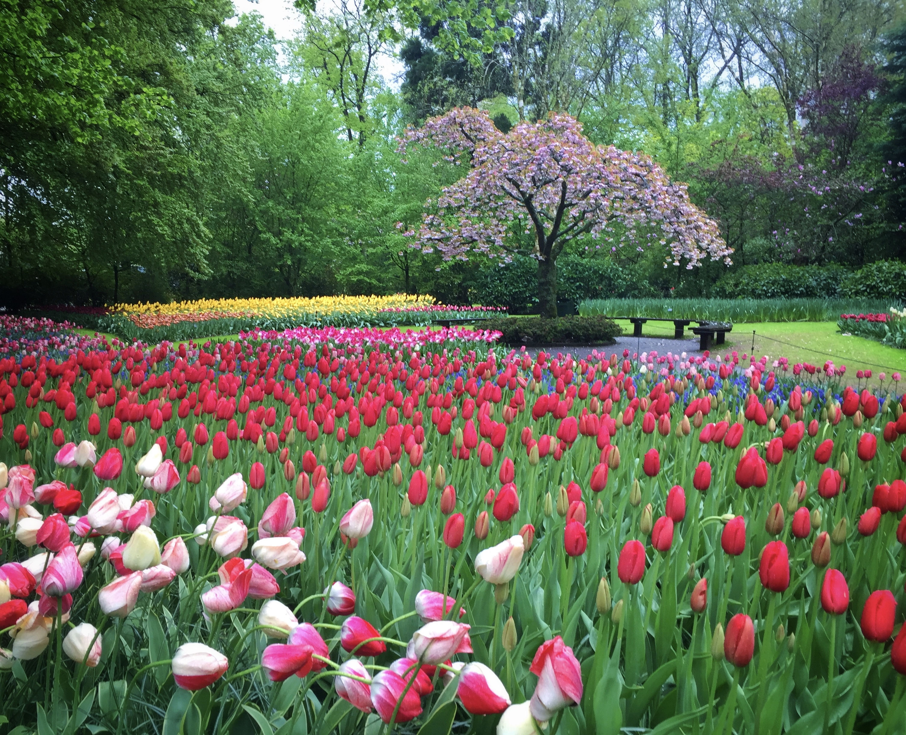
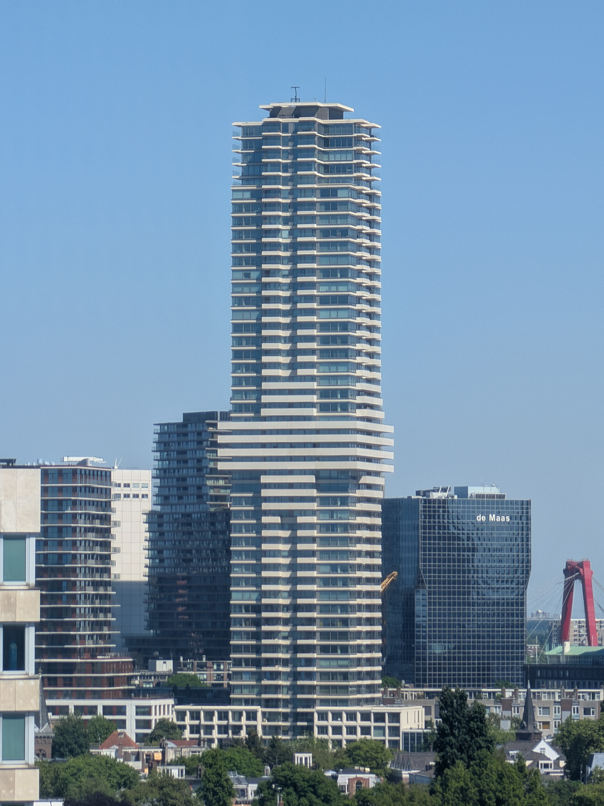
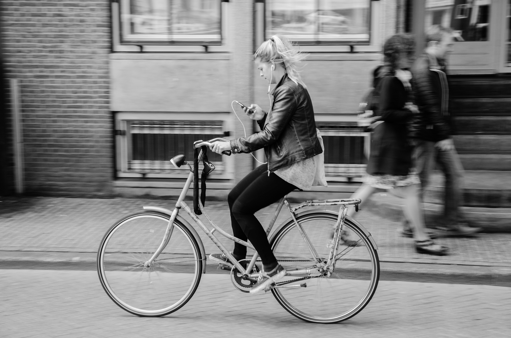
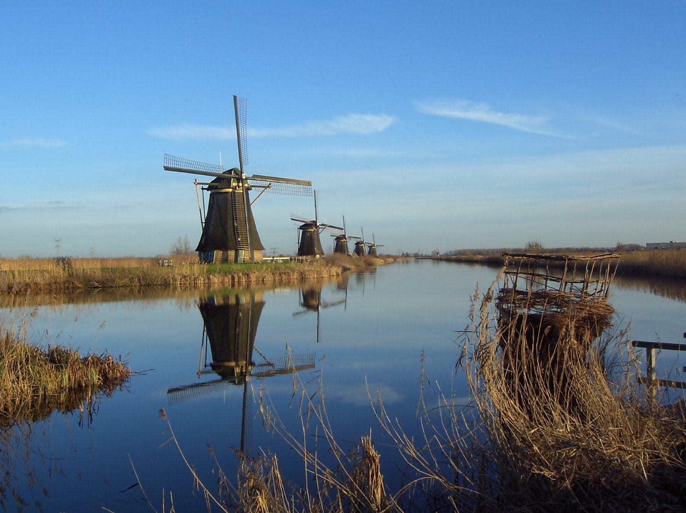
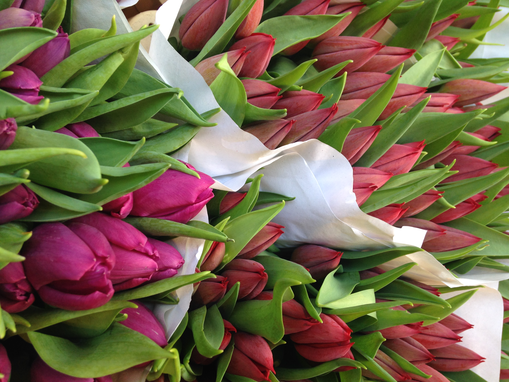
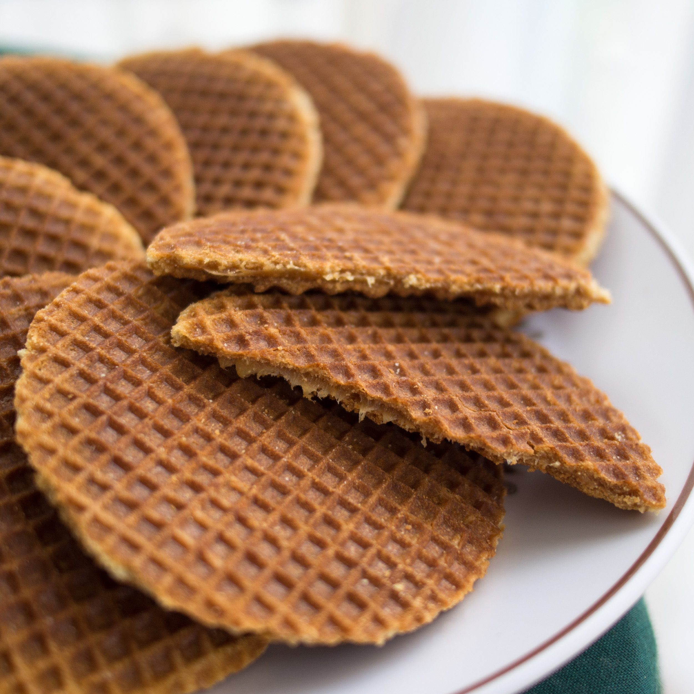
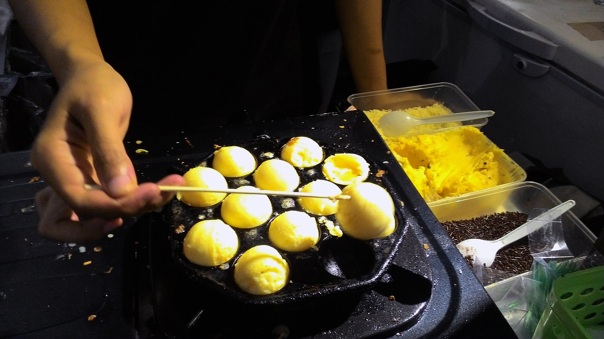
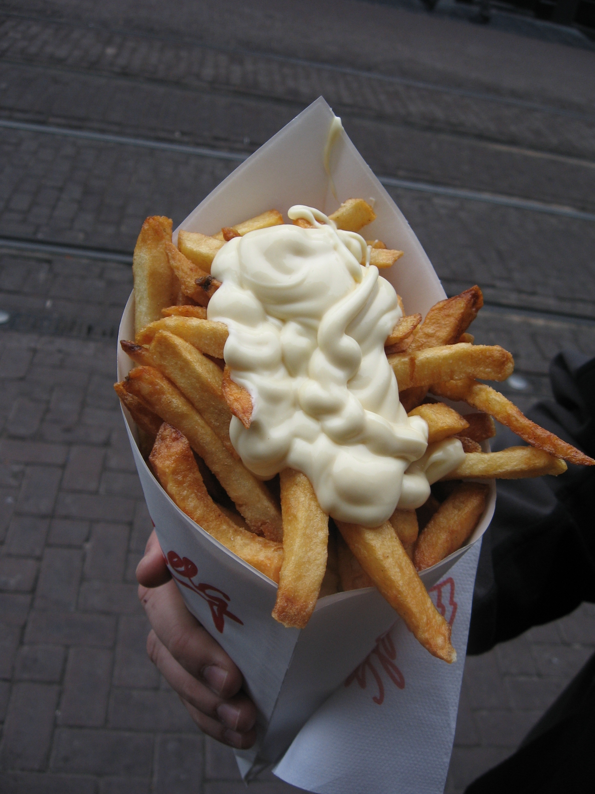
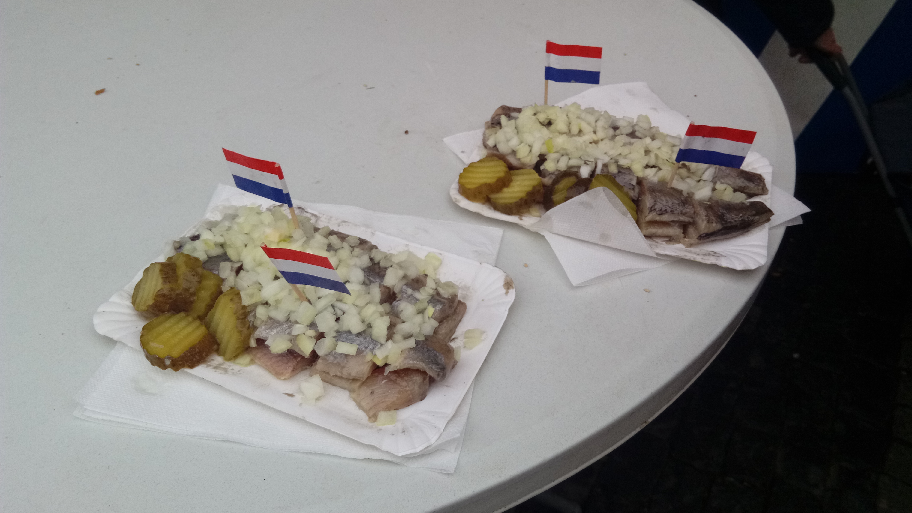

Picturesque Destinations
Discover the Dutch Charm





Where Colors Meet Calm
April - May (Tulips)
Euro (€)
Dutch & English
Rent a bicycle!
Picturesque Destinations


Live Like a Local

Join the locals and explore cities on two wheels along dedicated bike paths.
Glide peacefully through historic waterways and admire 17th-century architecture.

Witness the brilliant engineering of traditional Dutch windmills at Kinderdijk.

Wander through floating markets filled with vibrant blooms and tulip bulbs.

Immerse yourself in masterpieces at the Van Gogh Museum and Rijksmuseum.
Taste the Netherlands





7 Days of Magic